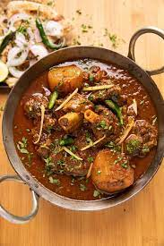

Mutton Curry

Description
Mutton curry is a delicious Indian curried dish of soft tender chunks of meat in a spicy tomato gravy.Have you ever wondered how the mutton curry served in restaurants has soft and tender chunks of meat ?
This post will help you make a simple and good mutton curry with basic ingredients and easy to follow steps.
Ingredients
- 1 kilo mutton
- 1 teaspoon garlic
- 1 teaspoon cumin powder
- salt
- 1 teaspoon garam masala
- 1/4th cup ghee
- 2 bay leaf
- 2 black cardomom
- 2 teaspoon turmeric
- 1 cup chopped onion
- 2 teaspoon ginger
- 3 teaspoon coriander powder
- 1 teaspoon black pepper
- 1/4th cup virgin olive oil
- 1 inches cinnamon
- 4 clove
- 2 green cardomom
Steps
- Wash mutton and marinate it
- Cook the masala
- Saute the onions
- Add marinated meat and cook
- Cover the lid and cook on low flame
- Garnish and serve hot!